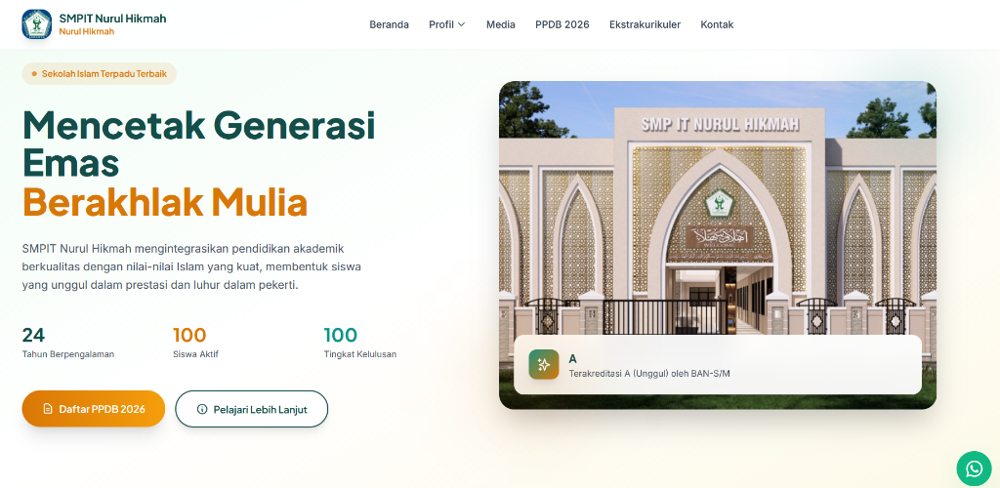

Mahasiswa aktif Sistem Informasi di UBSI (angkatan 2023) dan Lulusan D1 Politeknik APP Jakarta (2022) yang tertarik pada pengembangan perangkat lunak, perancangan basis data, serta operasional logistik.
Saya Dandy Huffaz Ichlamsyah, mahasiswa aktif program studi Sistem Informasi di Universitas Bina Sarana Informatika (UBSI).
Sebelumnya, saya telah menyelesaikan studi D1 di Politeknik APP Jakarta bidang Distribusi & Delivery. Selama menempuh studi, saya memfokuskan diri pada penerapan teknologi informasi untuk mendukung efisiensi alur kerja operasional dan pengembangan aplikasi web.
Saya memiliki pengalaman magang di perusahaan logistik serta aktif dalam mengerjakan proyek pengembangan web, baik secara mandiri maupun kolaboratif dalam tim. Melalui portofolio ini, saya ingin menampilkan hasil belajar dan kontribusi nyata yang telah saya lakukan.
Aplikasi web nyata yang telah dibangun dan dideploy untuk kebutuhan institusi maupun kompetisi
Sebuah platform web resmi untuk SMPIT Nurul Hikmah yang berfungsi sebagai media informasi profil sekolah serta portal pendaftaran penerimaan peserta didik baru (PPDB) online. Dikembangkan secara mandiri menggunakan arsitektur MVC berbasis CodeIgniter untuk menjamin keamanan pengolahan data pendaftar.

Aplikasi web pembelajaran (LMS) interaktif dengan konsep gamifikasi. Dikembangkan dalam tim dan berhasil meraih predikat Terbaik ke-2 pada program IT Bootcamp Software Dev Batch IV UBSI (2025). Mengakomodasi fitur pembagian materi, kuis, dan monitoring progres pengerjaan.
Website profil profesional dan portal landing page untuk jasa fotografi Nineetiestudio Jakarta. Dilengkapi katalog paket layanan (Wedding, Wisuda, Event, Family), galeri karya foto resolusi tinggi yang interaktif, dan tombol integrasi pemesanan WhatsApp.
Website resmi Rohani Islam SMAN 27 Jakarta sebagai wadah dakwah sekolah yang modern. Mempublikasikan agenda program kerja, tulisan artikel islami secara terstruktur, galeri ukhuwah, kepengurusan, serta integrasi API waktu sholat Jakarta real-time.
Penelitian empiris penerapan Affiliate Marketing sebagai alternatif pemasaran digital bagi UMKM di era Industry 4.0. Studi kasus pelaku usaha kecil di Jakarta.
Perancangan UI/UX untuk aplikasi penjualan produk makanan Cireng Mercon berbasis mobile. Berfokus metodologi UX untuk meningkatkan conversion rate food delivery.
Kompetensi terverifikasi (Klik kartu sertifikat untuk menampilkan verifikasi/dokumen sertifikat)
Pemahaman fundamental AI, Machine Learning dan Deep Learning sebagai basis teknologi cerdas.
Lihat Sertifikat →Teknik komunikasi efektif dengan Generative AI untuk mengoptimalkan pengembangan perangkat lunak.
Lihat Sertifikat →Membangun model prediktif cerdas dengan Supervised dan Unsupervised Learning.
Lihat Sertifikat →Penguasaan standar industri pemrograman Python dan OOP untuk aplikasi bersih dan scalable.
Lihat Sertifikat →Full Learning Path Artificial Intelligence — validasi kemampuan profesional menerapkan solusi AI.
Lihat Sertifikat →Pengembangan aplikasi Generative AI menggunakan ekosistem cloud Microsoft Azure.
Lihat Sertifikat →Pendalaman analisis data industri menggunakan tools SQL dan Python.
Lihat Sertifikat →Penguasaan siklus hidup pengembangan sistem dan rekayasa perangkat lunak.
Lihat Sertifikat →Automasi alur kerja sistem terintegrasi dengan Artificial Intelligence.
Lihat Sertifikat →Wawasan strategis perencanaan karir di industri IT global dan roadmap sukses profesional.
Lihat Sertifikat →Pendalaman standar industri pengembangan perangkat lunak dan kesiapan adaptasi teknologi.
Lihat Sertifikat →Simulasi proyek industri nyata, kolaborasi tim, dan presentasi teknis di hadapan para ahli.
Lihat Sertifikat →Meraih penghargaan sebagai pengembang perangkat lunak terbaik kedua pada program pelatihan intensif IT Bootcamp Software Development Batch IV yang diselenggarakan oleh UBSI. Penghargaan ini divalidasi lewat penyelesaian proyek LMS Pinpin E-Learning.
Universitas Bina Sarana InformatikaMeraih Juara Harapan 1 pada kompetisi Karya Kepemimpinan Pelajar (KKP) Wilayah II Jakhus. Penghargaan atas analisis penyelesaian masalah sosial, kerja kelompok, serta penyusunan visi kepemimpinan.
Badan Pendidikan Wilayah II JakhusKarya ilmiah yang diterbitkan dalam forum akademik
"Optimalisasi Affiliate Marketing Sebagai Alternatif Pemasaran Digital Bagi UMKM" — Analisis empiris pemanfaatan ekosistem digital untuk meningkatkan daya saing UMKM di era industri 4.0.
"Perancangan UI/UX Penjualan Produk Makanan Cireng Mercon Berbasis Mobile" — Menerapkan metodologi User Experience (UX) untuk meningkatkan conversion rate pada aplikasi food delivery.
Tertarik untuk berkolaborasi, berdiskusi tentang teknologi, atau sekadar menyapa?
Saya terbuka untuk diskusi proyek akademik, kolaborasi penelitian, magang, atau kesempatan pengembangan profesional di bidang Sistem Informasi dan pengembangan perangkat lunak.